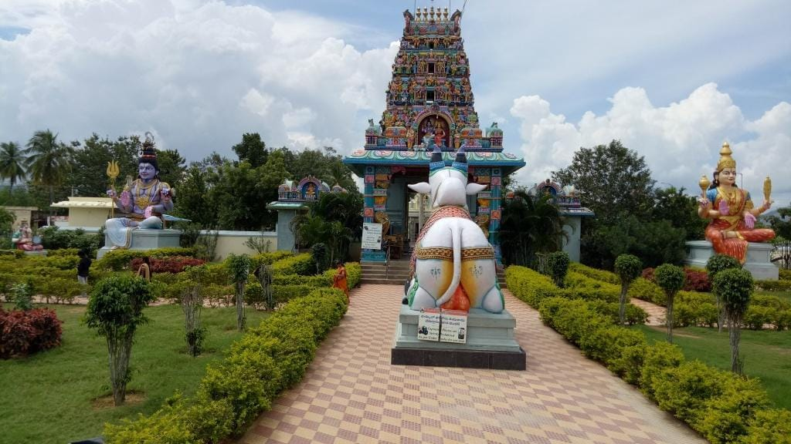
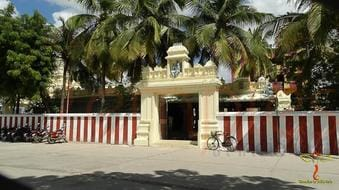
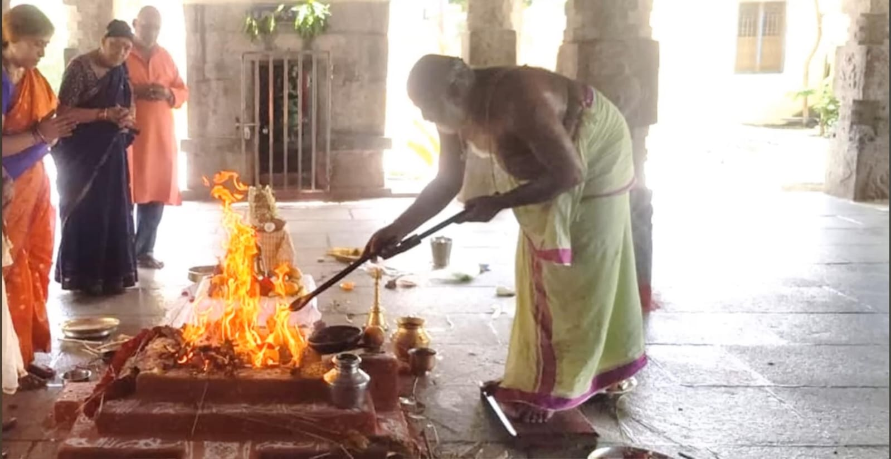

5. The most important and final aspect is that Kanipakam is a Panchayatana temple, meaning it houses five deities.
Ganapati is accompanied by the Goddess, Lord Shiva, Lord Vishnu, and Surya.
You might be curious about its location as you didn't see these temples during your visit.
In the northwest and northeast corners, there are two additional temples. The one in the northwest corner is called the Manikateswara temple.
In the garden area, you'll find large idols, as shown in the picture. This temple was built by Raja Raja Narendra Chola in the 11th century.
In that temple, the Goddess is in the form of Marakatambika Devi, and Swami has a snake around his neck, so he is called Manikanteswara Swami.
Surya Bhagavan (Sun God) is also present as a large idol, and there is also an idol of Kalabhairav. These marvelous sculptures resemble the ones in Belur.
Don't forget to visit this temple.

Manikanteswara Swamy Temple
Now, you might wonder where Vishnu is in the Panchayatana.
6. In the northeast corner of the Vinayaka temple, there's a Varadaraja Swami temple.
Inside that temple, you'll find large idols of Vishnu along with Sri Devi and Bhu Devi, beautifully represented.
When Janamejaya performed the Sarpa Yagam, which resulted in the deaths of countless snakes, he felt remorseful and agitated.
When he came to this temple, he found peace again. Daily, Sudarshan Homam is performed in the temple at 9 AM, and anyone can participate without any charge.
If you wish to perform it in your name, you can do so by paying 501 rupees.
Many people who have participated in Sudarshan Homam have reported experiencing remarkable miracles.
Some individuals lost everything in real estate and thought that their life was over.
After participating in the Sudarshan Homam, they experienced great improvements in their wealth.
There was a woman who suffered from severe burning sensations all over her body for two whole months.
Despite undergoing multiple scans, doctors couldn't find any medical issues and prescribed only ointments.
Desperate for relief, she spent a considerable amount of money seeking remedies for what she thought might be black magic.
When she participated in the Sudarshan Homam at Kanipakam, miraculously, her burning sensations subsided by the time the Homam was completed.
These explain the power of this Homam. If you visit Kanipakam in the morning, make sure to participate in the Sudarshan Homam at the Varadaraja Swami temple.
Name of the Priest who performs Sudarshana Homam at Varadaraja Swamy Temple is Sri Krishna Mohana Charyulu garu.
Contact him directly when you go to Kanipakam
 
Sri Varadaraja Swamy Temple,Kanipakam Sudarshana Homam
« Previous
Next »